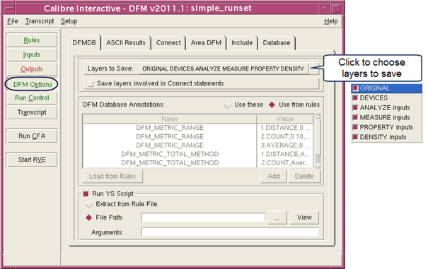

If you are performing
a run that generates a DFM Database, you can specify which layers
you would like saved to a DFM Database.
Procedure
- Choose to open the DFM
Options pane.
- Click the DFMDB tab,
as shown in the following figure.
Figure 1. DFMDB Tab for DFM
Options
- Click the button next to “Layers
to Save” and specify the layers that you would like saved to the
DFM Database. Note: These layers correspond to keywords in the DFM Database
operation.
ORIGINAL — Write original
(merged) layers.
DEVICES — Device layers.
This option causes device extraction to be performed.
ANALYZE — Input layers
to all DFM ANALYZE operations.
MEASURE — Input layers
to all DFM MEASURE operations.
PROPERTY — Input layers
to all DFM PROPERTY operations.
- If desired, select “Save layers
involved in Connect statements.” This control selects the CONNECT
or NO CONNECT keyword in the DFM Database operation.
- Select either the “Use these”
option or the “Use from rules” option if you want to specify database-level
annotations that correspond to annotations added to the DFM Database statement.
Use these —
Annotations added to the table using the Add button
are used in database output. Annotations listed in the rule file
are ignored.
Use from rules —
Annotations listed in the DFM Database Annotations table are ignored.
Only annotations listed in the rule file under the DFM Database
statement are used.
For more information, see “Database-Level Annotations” in the Calibre YieldAnalyzer and YieldEnhancer
User’s and Reference Manual.
- If you
chose “Use these” in the previous step, do the following to fill
in the DFM Database Annotations table:
- (Optional)
Click the Load from Rules button below the
DFM Database Annotations table to populate the table with annotations
present in the rule file. This step overwrites the existing table
entries.
Perform this step if you want to edit the rule file
annotations.
- Use
the Add and Delete buttons
to specify annotation names and the corresponding values you would
like to be saved. These options are also available using the right-click
menu over the Annotations table.
Click in the Name or Value cell the change the value.